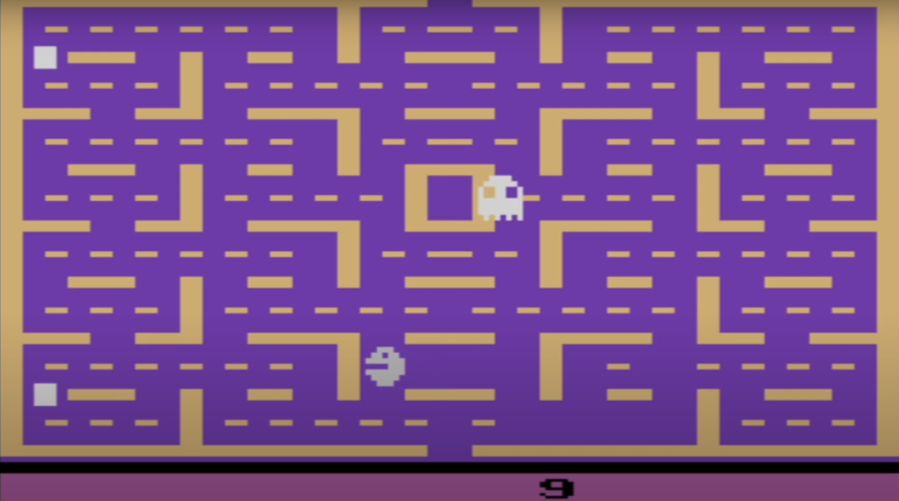
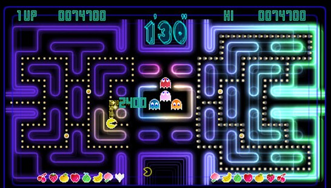
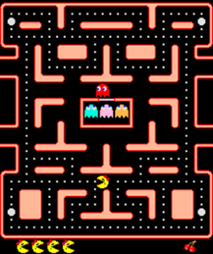

When someone talks about Pacman today, everyone knows that this yellow circle is meant where a piece is missing. But in the past, it was not a yellow circle but a white one consisting of pixels. Just like the ghosts were all blue. Nowadays with today‘s technology, the game is much more elaborated you have beautiful shapes and you don’t see the pixels as strong anymore. For example you can see two pictures one from the old Version and one from the new Version. Also there are more than two Versions existing for example the Championship edition or the edition called “Ms. Pacman”, but only the two below represent the original Pacman.

Old Version

New Version
The championship Version was especially designed for the Event and you only was able to play it while the championship. The design for the championship was a highlight of Pacman because it was very special. It looked more colorful because it had very bright and a lot of different colors, instead of the normal blue or red lines as walls.
Now you can’t play this version anymore, you only can play the original or the “Ms. Pacman”.

Championship Verson
The Ms. Pacman Version is just a little bit different from the original Version. The only difference is that the Pacman looks a little bit different with a red bow and a red kiss mouth.

Ms. Pacman